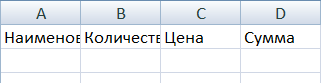

Создание таблицы в Excel
В этом уроке я покажу, как сделать таблицу в Excel. Мы составим ее по образцу, а также рассмотрим основные кнопки оформления.
Столбцы, строки и ячейки
Откройте программу Эксель: Пуск — Microsoft Office — Microsoft Office Excel.

В верхней части расположена панель редактирования. Вот как она выглядят в Microsoft Excel 2007-2021:

Под ней находится рабочая (основная) часть программы.
Обратите внимание на верхнюю строку с буквами A, B, C, D и так далее. Это названия столбцов.
Также обратите внимание на небольшие прямоугольники с цифрами 1, 2, 3, 4 и т.д. в левой части. Это названия строк.
При помощи них формируется название ячеек. Например, первая верхняя ячейка слева называется A1, потому что она находится в столбике A и в строке 1.
А на следующей картинке выделена ячейка B4. Её название (буква и цифра) подсвечены другим цветом.
Попробуем напечатать несколько цифр в B2. Для этого нужно щелкнуть по ней и на клавиатуре набрать цифры.
Чтобы закрепить введенное число и перейти к следующей ячейке, нажмите кнопку Enter на клавиатуре.
Кнопки оформления
Рассмотрим кнопки оформления в верхней части программы, в разделе «Главная». Кстати, они же есть и в Word.
- — шрифт. То, каким стилем будет написан текст.
- — размер букв.


 —
начертание (полужирный, курсив, подчеркнутый).
—
начертание (полужирный, курсив, подчеркнутый).- — выравнивание текста: по левому краю, по центру, по правому краю.
- — отмена последнего действия (возврат на шаг назад).
- — изменение цвета текста.
- — заполнение цветом (заливка).
Как создать таблицу
Посмотрите на уже составленную в Excel небольшую таблицу:

Верхняя ее часть — это шапка.
На мой взгляд, сделать шапку самое трудное. Нужно продумать все пункты, многое предусмотреть. Советую отнестись к этому серьезно, ведь очень часто из-за неправильной шапки приходится переделывать всю таблицу.
За шапкой следует содержание:
А сейчас на практике мы попробует составить в программе Excel такую таблицу.
В нашем примере шапка — это верхняя (первая) строка. Обычно она именно там и находится.
Щелкните по ячейке А1 и напечатайте первый пункт «Наименование». Затем кликните по В1 и напечатайте следующий пункт — «Количество».
Обратите внимание, слова как будто наслаиваются друг на друга. С этим мы разберёмся чуть позже.
Заполните С1 и D1.
А теперь приведём шапку в нормальный вид. Сначала нужно расширить ячейки, а точнее столбцы, в которые не поместились слова.
Для расширения столбца нужно навести курсор (стрелку мышки) на линию, разделяющую два столбика, в нашем случае на линию между А и В. Курсор поменяется и примет вид необычной двусторонней стрелки черного цвета. Нажмите левую кнопку мышки и, не отпуская её, растягивайте столбец до нужной ширины.
То же самое можно проделать и со строками.
Для расширения строки наведите курсор (стрелку мышки) на линию, разделяющую две строки. Курсор поменяется и примет вид необычной двусторонней стрелки черного цвета. Нажмите левую кнопку мышки и, не отпуская её, растягивайте строку до нужной ширины.

Расширьте столбцы, в которых не поместился текст. Затем немного увеличьте шапку. Для этого наведите курсор на линию между строкой 1 и 2. Когда он поменяет вид, нажмите левую кнопку и, не отпуская её, расширьте первую строку.
Принято, чтобы шапка несколько отличалась от содержимого. В таблице, которую мы повторяем, пункты шапки «толще» и «чернее», чем остальное содержимое. А также они закрашены серым цветом. Чтобы это сделать, нужно воспользоваться верхней частью программы Excel.
Нажмите на A1. Этим простым действием Вы ее выделите, то есть «скажете» программе Excel, что собираетесь что-то изменить в данной ячейке. А теперь нажмите на кнопку в верхней части программы. Текст станет толще и чернее (полужирный).
Конечно, таким же образом можно изменить и остальные пункты. Но представьте, что у нас их не четыре, а сорок четыре... Очень уж много времени это займет. Чтобы это было быстрее, нужно выделить ту часть, которую мы собираемся менять. В нашем случае это шапка, то есть первая строка.
Есть несколько способов выделения:
Выделение всей таблицы Excel. Для этого нужно нажать на маленькую прямоугольную кнопку в левом углу, над первой строкой (прямоугольником с цифрой 1).
Выделение части таблицы. Для этого нужно нажать на ячейку левой кнопкой мышки и, не отпуская ее, обвести те данные, которые нужно выделить.
Выделение столбца или строки. Для этого нужно нажать по названию нужного столбца или строки.
Кстати, таким же образом можно выделить несколько столбцов, строк. Для этого нужно нажать на название левой кнопкой мышки и, не отпуская мышку, тянуть по столбцам или строкам, которые нужно выделить.
А теперь попробуем изменить шапку нашей таблицы. Для этого выделите ее. Я предлагаю выделить строку целиком, то есть нажать на цифру 1.
После этого сделаем буквы толще и чернее. Для этого нажимаем кнопку:
Также в таблице, которую нам нужно сделать, слова в шапке расположены по центру. Для этого нажмите кнопку:
Ну, и, наконец, закрасим ячейки в шапке светло-серым цветом. Для этого воспользуйтесь кнопкой:
Чтобы выбрать подходящий цвет, нажмите на маленькую кнопку рядом и из появившегося списка цветов выберите нужный.
Самое сложное мы сделали. Осталось заполнить таблицу. Сделайте это самостоятельно.
А теперь последний штрих. Поменяем во всей таблице шрифт и размер букв. Напомню, что для начала нам нужно выделить ту часть, которую хотим изменить.
Предлагаю выделить таблицу целиком. Для этого нажмите кнопку:
Ну, и поменяем шрифт и размер букв. Нажмите на маленькую кнопку со стрелкой в поле, которое отвечает за шрифт:
Из появившегося списка выберите какой-нибудь шрифт. Например, Arial.
Кстати, шрифтов в программах из набора Microsoft Office очень много. Правда, не все они работают с русским алфавитом. Убедиться в том, что их много, можно, нажав на маленькую кнопку со стрелкой в конце поля для выбора шрифта и прокрутив колесико на мышке (или передвинув ползунок с правой стороны появившегося окошка).
Затем поменяйте размер букв. Для этого нажмите на маленькую кнопку в поле с указанием размера и из списка выберите нужный (например, 12). Напоминаю, что таблица должна быть выделена.
Если вдруг буквы перестанут помещаться в ячейки, всегда можно расширить столбец, как мы это делали в начале создания таблицы.
И еще один очень важный момент. На самом деле, составленная нами таблица на печати будет без границ (без перегородок). Выглядеть она будет вот так:
Если Вас не устраивает такой вариант, необходимо сначала выделить всю таблицу, после чего нажать на маленькую стрелочку в конце кнопки, которая отвечает за границы.
Из списка выберите пункт «Все границы».
Если Вы все сделали правильно, то получится вот такая таблица: